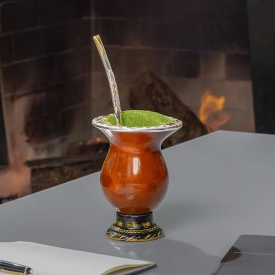
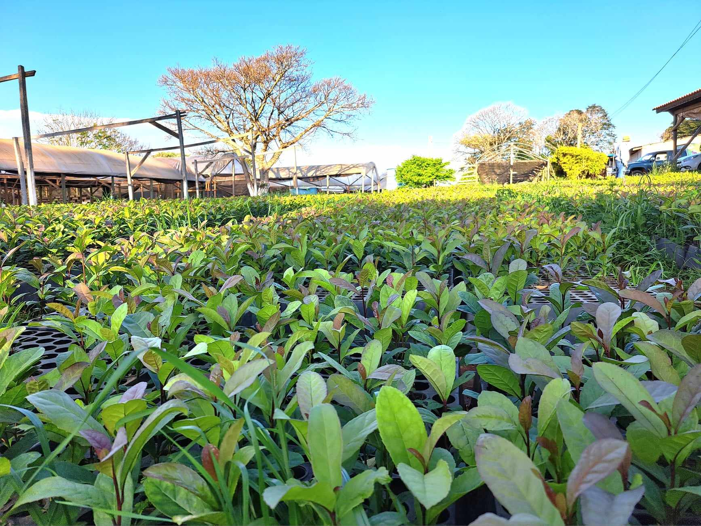
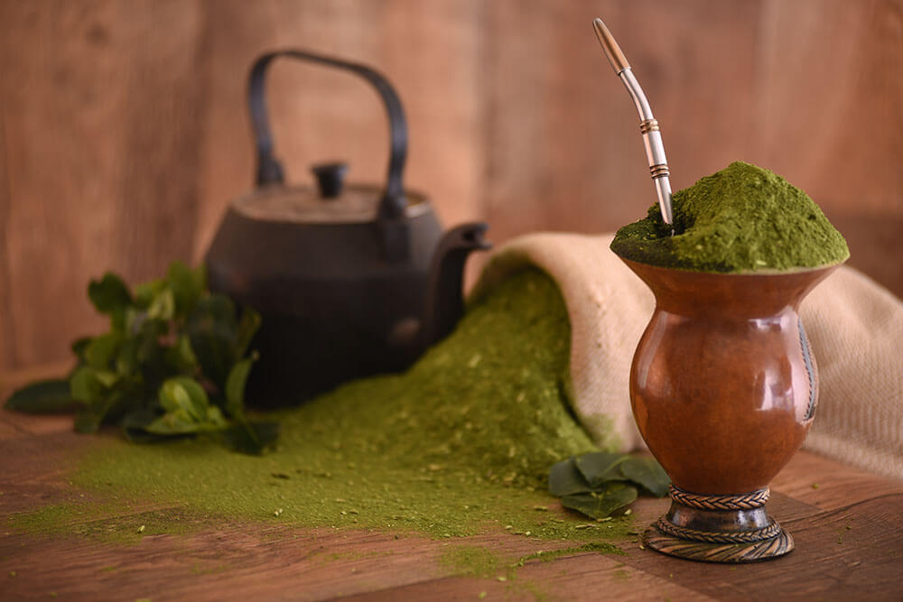
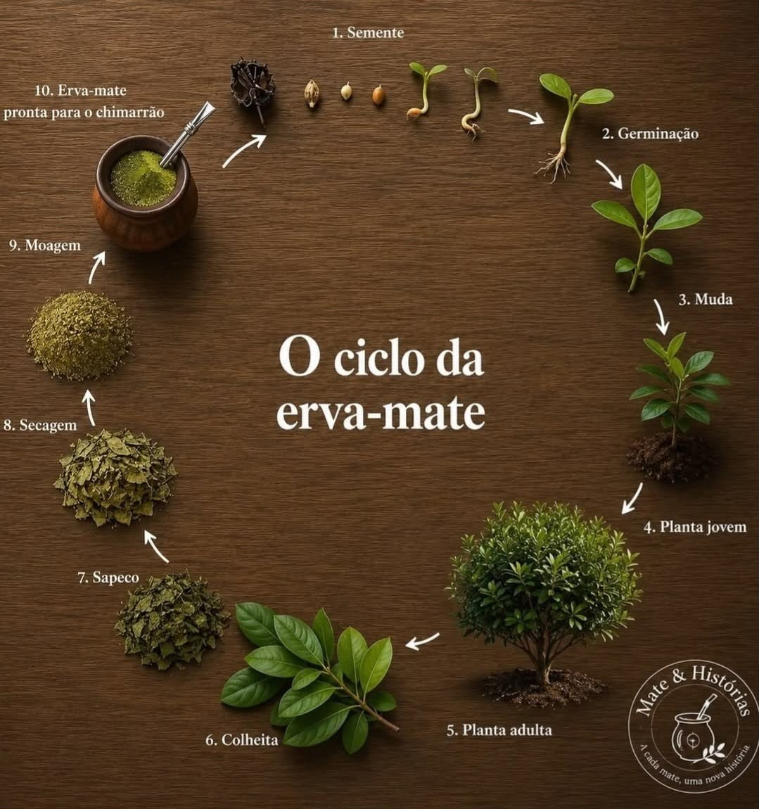

Sejam bem vindos ao meu site sobre o Chimarrão
O chimarrão é uma bebida tradicional preparada com erva-mate e água quente. Ele é consumido em uma cuia, utilizando uma bomba para beber a infusão.
A bebida possui grande importância cultural, principalmente nos estados da Região Sul do Brasil. O chimarrão representa tradição, convivência e costumes passados entre gerações.

História do Chimarrão
O consumo da erva-mate começou com os povos indígenas que viviam na América do Sul. Eles já utilizavam a planta como bebida muito antes da chegada dos europeus.
Com o passar do tempo, o costume de consumir erva-mate se espalhou pela Região Sul. O chimarrão se tornou uma bebida tradicional e passou a fazer parte da cultura de diversas famílias.

Chimarrão e a Cultura
O chimarrão é muito mais do que uma bebida. Ele representa momentos de convivência, amizade e união entre as pessoas. É comum que familiares e amigos compartilhem o chimarrão.
No Paraná, o chimarrão faz parte dos costumes de muitas comunidades e está ligado à cultura regional. A erva-mate também possui importância histórica e econômica para o estado.
Atualmente, o chimarrão continua sendo um símbolo da tradição sulista e é consumido por pessoas de diferentes gerações.

Curiosidades
Erva-Mate
O principal ingrediente utilizado no preparo do chimarrão é a erva-mate.
Cuia e Bomba
O chimarrão é preparado em uma cuia e consumido com uma bomba, utilizada para filtrar a bebida.
Tradição
Compartilhar o chimarrão é considerado um momento de convivência e amizade entre as pessoas.
Cultura do Sul
O chimarrão é um dos principais símbolos culturais da Região Sul do Brasil.
Memoria e aprendizados
Vamos mostrar o maravilhoso chimarrão
